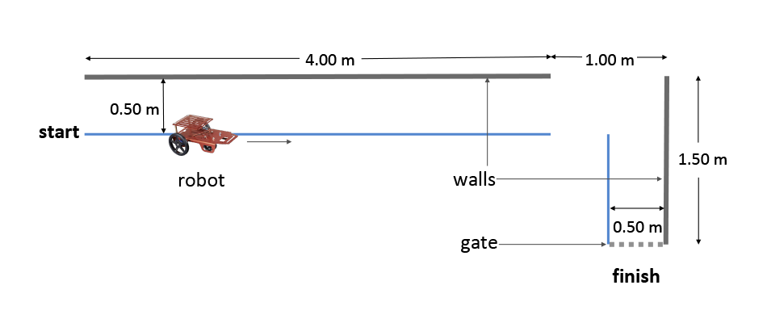

Challenge!
In previous lab activities you practiced basic skills for programming and manipulating the robot using the servos and feedback from the ultrasonic sensor. The original in-class challenge was to navigate along a wall, perform a turn, navigate along a second wall and pass through a gate as shown below.

You were constrained to keep the servo-powered wheels from touching a tape line and challenged to perform the task in the fastest possible time, competing with other teams in the class. Now, in the virtual environment, we are giving you a nearly equivalent challenge to the original. To prepare you were to develop and test a Follow the Wall strategy. Employ a similar strategy to the more complex navigation challenge given.
Note: Your final solution should not use a hard-coded strategy. You should be able to modify your code for a challenge with different coin distances from the walls. You will be assessed on completion of the task as well as the strategy you employed.
Instructions
The coins are approximately 110 cm away from the top wall and approximately 70 cm from the right wall. Use the data from the ultrasonic sensor to navigate the robot to collect all coins.